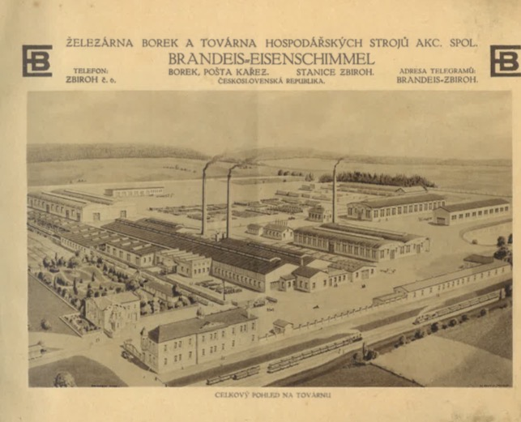

Why this archive exists
This archive began with a question: why was such a large railway station built here? Investigation led beyond the station to industrial records, company catalogues, maps and photographs documenting a history now largely absent from public view.
A central discovery was the surviving catalogue of the Borek factory, an industrial enterprise directly connected with Zbiroh station. The scale and range documented in the surviving material indicate an enterprise which, by modern comparison, would rank as a mid-sized to large industrial concern. Yet much of this history is now scarcely recognised locally.
{kind=link}

Source: Historical factory catalogue; archival material digitised by the State District Archive in Rokycany at the request of the Stanice Zbiroh research project.
If this history has been forgotten, what else has been forgotten?
This site assembles primary sources, archival records and field research for examination. Some questions can be resolved; others remain open. Relevant documents, photographs, corrections, archival references and historical memories are invited. Contributions may be made without providing a name or email address.
Catalogue analysis
Evidence status: The following is working analysis and is presented separately from the primary PDF. Individual claims should be checked against catalogue pages and independent archival sources before being treated as established historical fact.
The catalogue documents Železárna Borek a továrna hospodářských strojů, akc. spol. (Brandeis–Eisenschimmel), an industrial enterprise operating in Czechoslovakia in the early twentieth century.
Industrial scope
The working analysis describes an enterprise extending beyond agricultural machinery into foundry work, machine tools and construction equipment, with references to worker housing, a factory hotel and logistical connections with Kařez and Zbiroh station.
Capitalisation and modern comparison
Contemporary and later research sources currently give differing capital figures of approximately 2.4–2.6 million crowns. Modern corporate-value comparisons remain interpretive rather than historical valuations and should be treated accordingly.
Open the Factory Catalogue page for the primary PDF, detailed analysis and source context.
Research standard
The archive follows a simple rule: the strength of the language must not exceed the strength of the evidence.
Documented timeline
Strousberg and the early Borek industrial landscape
The nineteenth-century ownership sequence is being reconstructed from primary records. See the Bethel Henry Strousberg page.
Business postcard signed “E. Brandeis”
The archive includes a 1908 business postcard signed “E. Brandeis”. Attribution to a specific individual is treated separately.
Historical image of the Brandeis factory
The archive contains historical imagery documenting the factory complex.
Industrial product catalogue
Emil Brandeis deported to Terezín
Archival material identifies Emil Brandeis, born in 1868 and resident in Kařez, and records his deportation to Terezín and subsequently Treblinka.
Factory production during the Second World War
No verifiable evidence has yet been established for the factory's specific wartime production, so the question remains open.
Contribute evidence
Documents, photographs, corrections, archival references, source links and historical leads can be submitted directly to the archive. Name and email are optional. Please include sources wherever possible.
Proč tento archiv vznikl
Tento archiv začal otázkou: proč zde byla postavena tak velká železniční stanice? Pátrání vedlo od stanice k průmyslovým záznamům, firemním katalogům, mapám a fotografiím, které dokumentují historii dnes z velké části nepřítomnou ve veřejném povědomí.
Jedním z hlavních objevů byl dochovaný katalog továrny Borek, průmyslového podniku přímo spojeného se stanicí Zbiroh. Rozsah výroby doložený dochovanými materiály ukazuje podnik, který by se v dnešním srovnání řadil mezi středně velké až velké průmyslové podniky. Přesto je dnes značná část této historie v místním prostředí téměř neznámá.
Zdroj: Historický tovární katalog; archivní materiál digitalizoval Státní okresní archiv Rokycany na žádost výzkumného projektu Stanice Zbiroh.
Jestliže byla zapomenuta tato historie, co dalšího bylo zapomenuto?
Tento web shromažďuje primární prameny, archivní záznamy a terénní výzkum k dalšímu zkoumání. Některé otázky lze vyřešit, jiné zůstávají otevřené. Vítány jsou relevantní dokumenty, fotografie, opravy, archivní odkazy a historické vzpomínky. Příspěvek lze zaslat bez uvedení jména nebo e-mailu.
Analýza katalogu
Stav důkazů: Následující text je pracovní analýza oddělená od primárního PDF. Jednotlivá tvrzení je třeba ověřovat podle katalogu a nezávislých archivních pramenů.
Katalog dokumentuje společnost Železárna Borek a továrna hospodářských strojů, akc. spol. (Brandeis–Eisenschimmel).
Otevřít stránku továrního katalogu s primárním PDF a podrobnou analýzou.
Výzkumný standard
Archiv se řídí jednoduchým pravidlem: síla formulace nesmí překročit sílu důkazů.
Přispějte důkazy
Dokumenty, fotografie, opravy, archivní odkazy, zdroje a historické stopy lze zaslat přímo archivu. Jméno a e-mail jsou nepovinné.
Warum dieses Archiv existiert
Dieses Archiv begann mit einer Frage: Warum wurde hier ein so großer Bahnhof gebaut? Die Untersuchung führte vom Bahnhof zu Industrieunterlagen, Firmenkatalogen, Karten und Fotografien, die eine Geschichte dokumentieren, die heute weitgehend aus der öffentlichen Wahrnehmung verschwunden ist.
Eine zentrale Entdeckung war der erhaltene Katalog der Borek-Fabrik, eines Industriebetriebs, der unmittelbar mit dem Bahnhof Zbiroh verbunden war. Umfang und Bandbreite der erhaltenen Unterlagen weisen auf ein Unternehmen hin, das im heutigen Vergleich als mittlerer bis großer Industriebetrieb gelten würde. Dennoch ist ein erheblicher Teil dieser Geschichte heute vor Ort kaum bekannt.
Quelle: Historischer Fabrikkatalog; das Archivmaterial wurde auf Anfrage des Forschungsprojekts Stanice Zbiroh vom Staatlichen Bezirksarchiv Rokycany digitalisiert.
Wenn diese Geschichte vergessen wurde, was wurde noch vergessen?
Diese Website sammelt Primärquellen, Archivunterlagen und Feldforschung zur Prüfung. Einige Fragen lassen sich klären, andere bleiben offen. Relevante Dokumente, Fotografien, Korrekturen, Archivhinweise und historische Erinnerungen sind willkommen. Beiträge können ohne Angabe von Name oder E-Mail-Adresse eingereicht werden.
Kataloganalyse
Belegstatus: Der folgende Text ist eine Arbeitsanalyse und wird vom Primär-PDF getrennt dargestellt. Einzelne Aussagen sollten anhand des Katalogs und unabhängiger Archivquellen überprüft werden.
Der Katalog dokumentiert die Železárna Borek a továrna hospodářských strojů, akc. spol. (Brandeis–Eisenschimmel).
Seite des Fabrikkatalogs mit Primär-PDF und ausführlicher Analyse öffnen.
Forschungsstandard
Das Archiv folgt einer einfachen Regel: Die Stärke der Formulierung darf die Stärke der Belege nicht übersteigen.
Belege beitragen
Dokumente, Fotografien, Korrekturen, Archivhinweise, Quellen und historische Spuren können direkt an das Archiv übermittelt werden. Name und E-Mail sind optional.